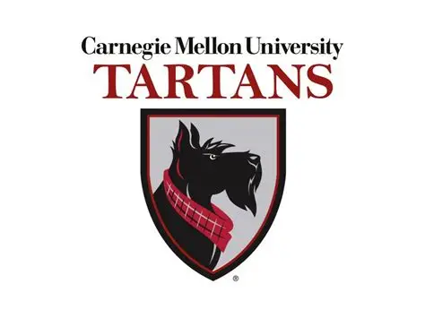
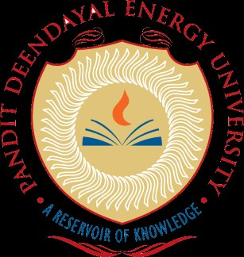

Academia
Where I studied, what I taught, and who I learned from.
Degrees
-
2021
2023
Master of Science, Information Security
Carnegie Mellon University · Information Networking InstituteGPA 3.84 / 4.0. Master's thesis titled "Defending Against Adversarial Machine Learning: Insights from Students vs. Professionals," examining how formal cybersecurity training correlates with defensive performance against adversarial attacks on machine learning systems. -
2016
2020
Bachelor of Technology, Computer Engineering
Pandit Deendayal Energy University · Gandhinagar, IndiaGPA 9.17 / 10.0. Undergraduate research in game theory and cybersecurity under the supervision of Dr. Nishant Doshi, producing two peer-reviewed publications in Procedia Computer Science (Elsevier), presented at the FNC 2019 international conference in Halifax, Canada.
Teaching
-
Jan 2023
May 2023Graduate Teaching Assistant, Security in Networked Systems (14-742)
Carnegie Mellon University · Pittsburgh, PADeveloped a weekly office-hour guide to streamline debugging support. Independently improved labs and oversaw grading processes for the course. -
Aug 2022
Dec 2022Graduate Teaching Assistant, Introduction to Computer Systems (14-513 / 15-513 / 15-213)
Carnegie Mellon University · Pittsburgh, PALed weekly recitations and provided Piazza and office-hour support for systems programming and debugging. Collaborated with faculty to improve labs, streamline assignments, and ensure smooth exam administration. Built reproducible test cases and step-by-step debugging guidance for common systems bugs, improving student success on labs and assignments.